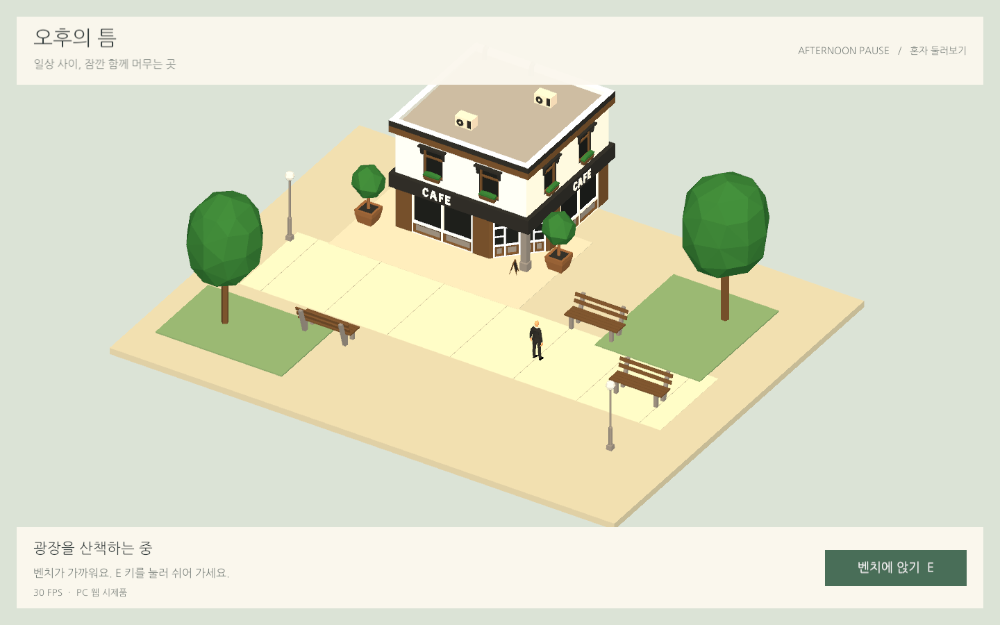
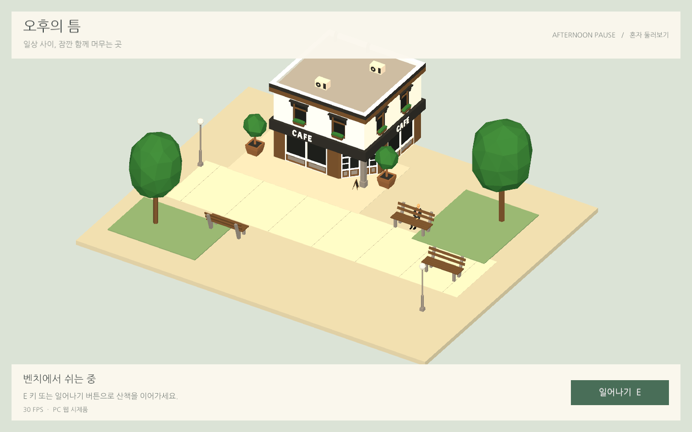
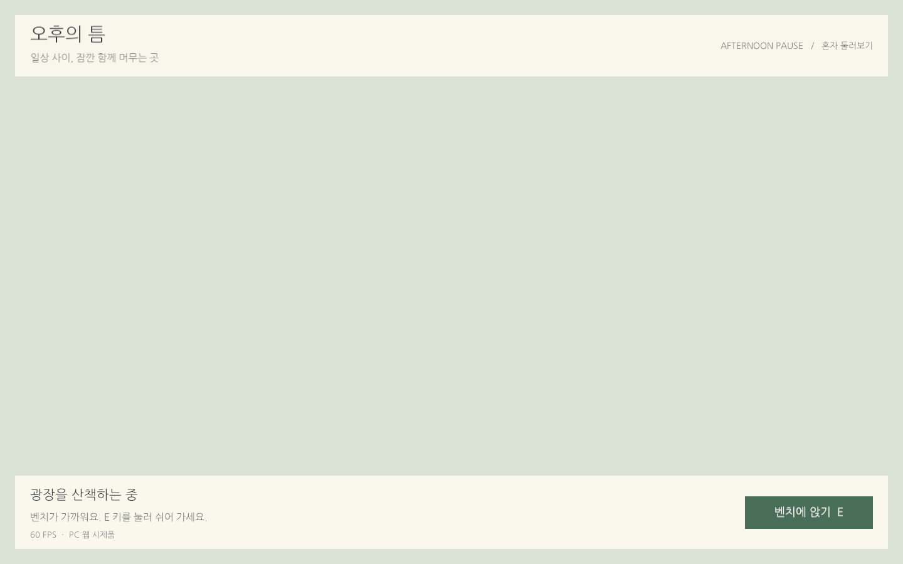

Tracefolio REPORTS & ISSUES
Tracefolio REPORTS & ISSUES오후의 틈 — PC 웹 1인 광장 이동·착석 시제품
완료두 polyperfect 에셋으로 카페 광장을 만들고 Chrome·Edge 이동·착석과 실제 백그라운드 탭 복귀·성능을 검증했습니다.
작업 결과
PC 웹용 1인 광장을 구현하고 실제 브라우저 QA를 완료했습니다. WASD·방향키·바닥 클릭으로 이동하고, 벤치 근처에서 E 키나 버튼으로 착석·기립할 수 있습니다.


변경 내용
적용 내용
작은 광장·카페·벤치 3개만 선별했으며 씬·UI·버튼 이벤트를 편집 가능한 Unity 오브젝트로 저장했습니다. 원본 에셋과 데모 씬은 보존했습니다. Runtime과 Editor 코드는 어셈블리를 분리했습니다.
첫 웹 빌드에서 UI만 보이고 WebGL sampler mismatch가 발생했습니다. 실시간 그림자를 제외한 설정으로 재빌드한 뒤 3D 표시와 그리기 오류 해소를 확인했습니다. 엔진 내부의 근본 원인은 단정하지 않습니다.

한글 UI 폰트는 Nanum Gothic OFL 원본 2,054,744바이트에서 사용하는 글리프 73,616바이트로 줄였습니다. 최종 파일 전체는 17,505,239바이트입니다. 자산별 해시는 첨부에 보존했습니다.
검증
Unity 6000.0.83f1 / URP 17.0.4, Windows PC, NVIDIA GTX 970 / D3D11에서 실제 웹 빌드를 실행했습니다.
| 브라우저 | 실제 버전 | 중앙 FPS | p95 프레임 시간 |
|---|---|---|---|
| Chrome | 156.0.8078.80 | 30.01 | 34.00 ms |
| Edge | 156.0.4314.58 | 30.01 | 34.00 ms |
실제 키보드·마우스로 이동, 먼 곳에서 착석 방지, 벤치 3곳의 착석·기립, 착석 중 이동 방지, 버튼 연결을 검사했습니다. 브라우저 예외·WebGL 그리기 오류는 없었습니다. 엔진 초기화 경고는 원본 QA에 보존했으며 경고가 전혀 없다고 보고하지 않습니다.
Playwright의 기본 포커스 에뮬레이션이 가시성 검증에 개입하는 것을 설치 소스에서 확인하여, 실제 탭 숨김·복귀 검증은 포커스 강제가 없는 별도 Chrome CDP 연결로 실행했습니다. document.visibilityState=hidden, 런타임 hidden=true, 목표 5 FPS와 복귀 후 30 FPS·이동을 확인했습니다. 해당 측정 뷰포트는 1424×905, DPR 1입니다.
렌더러 작업 CPU는 전경 11.60% → 숨김 0.08%입니다. 이는 한 코어 기준 Chromium TaskDuration 측정이며 전체 PC·GPU 사용률과 다릅니다. WebAssembly 힙은 96,665,600바이트였습니다.
Chrome QA · Edge QA · 실제 탭·CPU·메모리 측정 · 최종 빌드·소스 해시
남은 사항
서버 배포·다중 접속·채팅·프로필은 이후 단계입니다. 이번 시제품은 로컬 HTTP 서버에서 확인했습니다. 단기 성능 측정이며 수 시간 이상의 안정성·모바일·다른 GPU는 미검증입니다. 실시간 그림자는 사용하지 않습니다.
Affinity MCP 연결이 ECONNREFUSED여서 캡처 편집·압축과 GIF 변환은 실행하지 않았습니다. 실제 브라우저 원본 PNG를 첨부했습니다. 공식 프로젝트 로고는 미등록(null)입니다.
교훈 검토: 전역 지침 변경 없음. 기존의 실제 실행·설정 검증 원칙을 적용했으며, Playwright 포커스 강제와 Unity 웹 초기화 시점에 관한 구체적인 근거는 이 프로젝트에 보존합니다.
작업 시간
- 제안 시간: 30~60분
- 실제로 완료된 시간: 구현·웹 QA: 66분 49초, 2026-11-03 22:37:42 KST 완료. 공개 배포·외부 접근 확인은 게시 후 별도 검증합니다.
- XERJ: 미사용 — XERJ 연결 도구·프로젝트 검색 스크립트 미제공. rg 검색 결과를 현재 소스·설정·실제 웹 실행으로 대조했습니다.